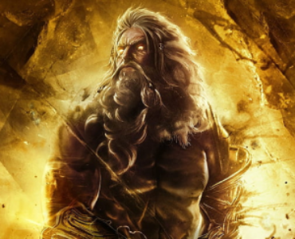
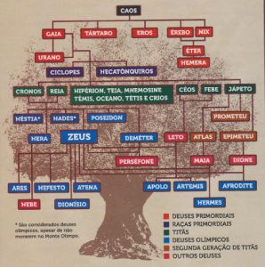
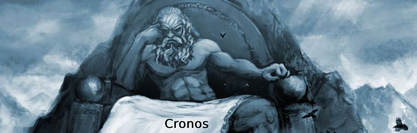
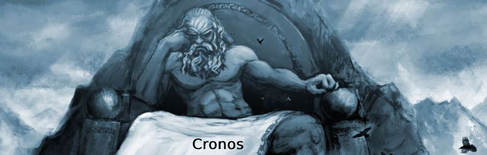

Apresentação
Zeus era o deus mais importante da religiosidade praticada pelos gregos antigos, sendo aquele que regia os
homens e os deuses. Sua importância na religiosidade grega fez com que ele constantemente fosse chamado de
Pai, sendo considerado o deus dos céus, do trovão, do raio, entre outros.


História
Zeus nasceu de Cronos e Reia. Cronos, com medo de ser destronado por um de seus filhos, engolia todos os filhos
assim que nasciam. No entanto, Reia conseguiu salvar Zeus, substituindo-o por uma pedra enrolada em panos, que
Cronos engoliu sem perceber. Zeus foi secretamente criado na ilha de Creta, onde foi alimentado por uma cabra
chamada Amalteia e cuidado por ninfas.
Quando Zeus cresceu, ele liderou uma revolta contra seu pai Cronos e os titãs. Com a ajuda de seus irmãos e
aliados, conhecidos como os olímpicos, Zeus conseguiu derrotar os titãs e, assim, estabeleceu a supremacia dos
deuses olímpicos. Zeus se tornou o deus do trovão, relâmpago e do céu. Ele também era considerado o senhor do
Olimpo, a montanha mais alta da Grécia, onde os deuses tinham seu lar. Zeus governava sobre os deuses olímpicos
com autoridade e justiça.



Família
Zeus residia e governava o Monte Olimpo, morada dos principais deuses gregos. Esse deus era conhecido por
controlar o clima e usá-lo para punir os homens quando se enfurecia. Zeus controlava os raios e era visto
como o mantenedor da justiça.
Por ser um deus muito popular, lhe era atribuída uma série de características, e ele poderia ser conhecido
por diferentes nomes. Era conhecido, por exemplo, como Zeus Xênio, Zeus Órquio, Zeus Herceu, Zeus Agoreu etc.
O nome Zeus Polieu, por exemplo, se referia ao fato de Zeus ser conhecido como o deus protetor das cidades
(polis).
Além disso, povos como os macedônios acreditavam que Zeus havia sido o seu criador. Os gregos temiam Zeus
porque ele se enfurecia sempre que via coisas más sendo realizadas por seres humanos. Os mitos gregos narram
vários episódios em que Zeus puniu humanos e outros seres por agirem de maneira inapropriada.
Ainda assim, alguns historiadores afirmam que, pela análise dos mitos gregos, é plausível afirmar que o
senso de justiça de Zeus era irregular, pois só agia para corrigir injustiças quando queria, e não quando
era necessariamente preciso. Além disso, Zeus ficou conhecido por intermediar uma série de conflitos entre
deuses, como foi o caso da disputa entre Apolo e Hermes pela primeira lira.
Os romanos também veneravam os deuses gregos. Zeus era conhecido nas terras romanas como Júpiter, e sua
esposa, Hera, era chamada de Juno.
Cronos: Cronos era um titã e o pai de Zeus. Ele temia que um de seus filhos o destronasse, então ele engolia seus
filhos logo após o nascimento. Isso levou à trama para salvar Zeus, que acabou derrotando Cronos.
Reia: Reia era a esposa de Cronos e a mãe de Zeus. Ela desempenhou um papel crucial ao salvar Zeus,
substituindo-o por uma pedra quando Cronos tentou engoli-lo.
Irmãos e Irmãs:
Zeus tinha vários irmãos e irmãs, conhecidos como os deuses olímpicos. Os principais incluem:
Héstia: A deusa do lar e da lareira.
Deméter: A deusa da agricultura.
Hera: Hera era a irmã e esposa de Zeus, tornando-se a rainha dos deuses. Ela era a deusa do casamento e da
maternidade.
Hades: Hades era o deus do submundo, responsável pelos mortos.
Poseidon: Poseidon era o deus dos mares e dos terremotos.
Consortes e Filhos:
Zeus teve inúmeras amantes entre deusas, titãs, ninfas e até mortais. Isso resultou em muitos filhos, alguns dos
quais se tornaram deuses e heróis notáveis. Alguns dos filhos notáveis de Zeus incluem:
Apolo e Ártemis: Filhos de Zeus com Leto. Apolo era o deus do sol, música e poesia, enquanto Ártemis era a deusa
da caça e da natureza selvagem.
Atena: Zeus deu à luz Atena diretamente de sua cabeça. Ela era a deusa da sabedoria, estratégia e guerra justa.
Hércules (Héracles): Um dos filhos mais famosos de Zeus, Hércules era conhecido por sua força sobre-humana e
suas doze tarefas lendárias.
Perseu: Outro herói famoso, filho de Zeus e Danae, conhecido por matar a Medusa.

 
